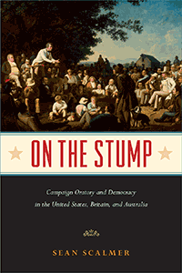

<body bgcolor="#FFFFFF" text="#000000" link="#0000FF" vlink="#CC0000" alink="#CC0000"><center><hr width="350" size="1" align="center" noshade>The story of how the "stump speech" was created, diffused, and helped to shape the modern democracies of the Anglo-American world<hr width="350" size="1" align="center" noshade><p><a href="https://cdcshoppingcart.uchicago.edu/Cart/ChicagoBook.aspx?ISBN=&&PRESS=temple" target="_top">Buy this book!</a> | <a href="https://cdcshoppingcart.uchicago.edu/Cart/Cart.aspx?PRESS=temple" target="_top">View Cart</a> | <a href="https://cdcshoppingcart.uchicago.edu/Cart/Cart.aspx?PRESS=temple" target="_top">Check Out</a></p><p></p></center><!--none//--><h1 class = "booktitle">On the Stump</h1> <h1 class = "subtitle">Campaign Oratory and Democracy in the United States, Britain, and Australia</h1>
<h3>Sean Scalmer </h3>
paper: $24.95, Sep 17<BR>EAN:&nbsp;978-1-4399-1504-2<BR><font color=#990033>Not Yet Published Preorder</FONT><font size=-7><br>&nbsp;</font></p><p class="info">cloth: $74.50, <BR>EAN:&nbsp;978-1-4399-1503-5<BR><font color=#990033>Not Yet Published Preorder</FONT><font size=-7><br>&nbsp;</font></p><p class="info">e-book: $24.95, <BR>EAN:&nbsp;978-1-4399-1505-9<BR><font color=#990033>Not Yet Published Preorder</FONT><font size=-7><br>&nbsp;</font></p></p></td></tr></table>
<BR> <p class="info">236 pp<BR> 6 x 9<BR> 8 halftones <p class="info"><font size=-7>&nbsp;</font></p><p class="info">
</P><BLOCKQUOTE><p>"On the Stump i <i>s a pioneering study of politics in the emerging Anglo-American world of the nineteenth century. Scalmer amply succeeds in pulling together material from the national stories of America, Britain, and Australia to form a coherent and compelling argument in transnational history. At the same time, he is rightly alive to local contexts that ensured that the stump speech took a different form, and was perceived in a different way, in each society. The superb writing, the breadth of the study, and the serious engagement with what it means to write transnational political history should guarantee this excellent book a wide readership."<br/>-</i><b>Jon Lawrence</b>, Associate Professor in Modern British History at the University of Exeter and author of <i>Electing Our Masters: The Hustings in British Politics from Hogarth to Blair</i><br>
</BLOCKQUOTE>
<p>"Stumping," or making political speeches in favor of a candidate, cause, or campaign has been around since before the 1800s, when speechmaking was frequently portrayed as delivered from the base of a tree. The practice, which has been strongly associated with the American frontier, British agitators, and colonial Australia, remains an effective component of contemporary democratic politics. <br/><br/>In his engaging book <i>On the Stump,</i> Sean Scalmer provides the first comprehensive, transnational history of the "stump speech." He traces the development and transformation of campaign oratory, as well as how national elections and public life and culture have been shaped by debate over the past century. <br/>;<br/>Scalmer presents an eloquent study of how "stumping" careers were made, sustained, remembered, and exploited, to capture the complex rhythms of political change over the years. <i>On the Stump </i>examines the distinctive dramatic and performative styles of celebrity orators including Davy Crockett, Henry Clay, and William Gladstone. Ultimately, Scalmer recovers the history of the stump speech and its historical significance in order to better understand how political change is forged.<br>
<P CLASS="top"><A HREF="#top">BACK TO TOP</A></P>&nbsp;
<BR>&nbsp;
<h2 class="inpageheading"><A NAME="reviews"></a>Reviews</h2>
<p><i>"Offering a fresh appreciation of the way stumping developed in the United States and a fascinating comparison between the United States, Great Britain, and Australia</i>, On the Stump <i>makes a valuable contribution not only to these three national histories but to transnational history as well. With particular sensitivity to the subtleties as stumping developed and changed, Scalmer helps us understand how this technique grew and in turn helped American democracy grow. Impressively researched, well written, and authoritative, On the Stump</i><i> </i><i>is an insightful and illuminating book.</i>"<br/>-<b>Gil Troy</b>, Distinguished Scholar in North American Studies at McGill University and author of <i>See How They Ran: The Changing Role of the Presidential Candidate</i><br>
<P CLASS="top"><A HREF="#top">BACK TO TOP</A></P>&nbsp;<P>
</P><BR>&nbsp;
<H2 class="inpageheading"><A NAME="author bio"></a>About the Author(s)</H2><p><b>Sean Scalmer</b> is an Associate Professor in the School of Historical and Philosophical Studies at the University of Melbourne, Australia. He is the author or editor of several books, including <i>Gandhi in the West: The Mahatma and the Rise of Radical Protest</i>; <i>Activist Wisdom: Practical Knowledge and Creative Tension in Social Movements</i> (with Sarah Maddison); and <i>Dissent Events: Protest, the Media and the Political Gimmick in Australia</i>.<br>
<P CLASS="top"><A HREF="#top">BACK TO TOP</A></P>
<p><h2 class="inpageheading"><a name="subjects"></a>Subject Categories</h2> <p><a href="http://www.temple.edu/tempress/political.html" target="_top">Political Science and Public Policy</a> <br><a href="http://www.temple.edu/tempress/history.html" target="_top">History</a> <br><a href="http://www.temple.edu/tempress/mass_media.html" target="_top">Mass Media and Communications</a> <br><a href="" target="_top"></a> <br><a href="" target="_top"></a> </p>
</p>
<P>
</P>
<p align="center"><a href="https://cdcshoppingcart.uchicago.edu/Cart/ChicagoBook.aspx?ISBN=&&PRESS=temple" target="_top">Buy this book!</a> | <a href="https://cdcshoppingcart.uchicago.edu/Cart/Cart.aspx?PRESS=temple" target="_top">View Cart</a> | <a href="https://cdcshoppingcart.uchicago.edu/Cart/Cart.aspx?PRESS=temple" target="_top">Check Out</a></p><p><font face="Arial" size="1"><a href="copyright.html" onMouseOver="window.status='Web Copyright Policy';return true;" onMouseOut="window.status=''" title="Web Copyright Policy">&copy;</a> 2017 <a href="http://www.temple.edu" target="new" onMouseOver="window.status='Link to Temple University home page';return true;" onMouseOut="window.status=''" title="Link to Temple University home page">Temple University</a>. All Rights Reserved. http://www.temple.edu/tempress/titles/2459_reg.html</font></p>